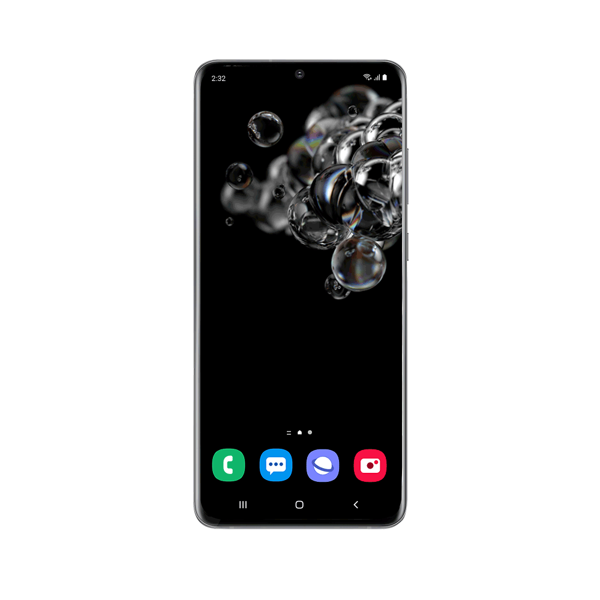

iPhone 13 и iPhone 13 Mini са смартфони , проектирани, разработени, предлагани на пазара, и продавани от Apple Inc. Те са поколение на петнадесетия на Iphones (следващ iPhone 12 и iPhone 12 Mini ). Те бяха представени на събитие на Apple в Apple Park в Купертино , Калифорния на 14 септември 2021 г., заедно с водещите iPhone 13 Pro и iPhone 13 Pro Max с по-висока цена. Предварителни поръчкиза iPhone 13 и iPhone 13 Mini започнаха на 17 септември 2021 г. Те станаха налични на 24 септември 2021 г.

iPhone 13 и 13 Mini разполагат със същата система от камери с три камери: една предна камера и две задни камери: широка и ултра-широка камера. И двете камери, обърнати назад, съдържат по-големи сензори за по-голямо събиране на светлина с оптична стабилизация на изображението (OIS). Модулът на камерата на гърба е разположен диагонално, вместо вертикално, за да проектира по-големите сензори.Камерите използват най-новия компютърен фотографски двигател на Apple , наречен Smart HDR 4. Потребителите могат също да избират от редица фотографски стилове по време на заснемане, включително богат контраст, жив, топъл и хладен. Apple уточнява, че това е различно от филтъра , тъй като работи интелигентно с алгоритъма за обработка на изображения по време на заснемане, за да приложи локални корекции към изображението. Приложението за камера съдържа нов режим, наречен Cinematic Mode, който позволява на потребителите да фокусират между обектите и да създават плитка дълбочина на полето с помощта на софтуерни алгоритми. Поддържа се на широките и предните камери в 1080p при 30 кадъра в секунда.
iPhone 13 има плоско шаси, аналогично на това на последните продукти на Apple, с някои разлики, като задните камери са по-големи и подредени диагонално. The Face ID сензор корпуса TrueDepth сега 20% по-малък в сравнение с предшествениците си. iPhone 13 и 13 Mini се предлагат в пет цвята: Midnight, Starlight, Product Red , Blue и Pink.
Източник